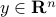
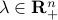
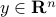
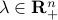
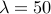
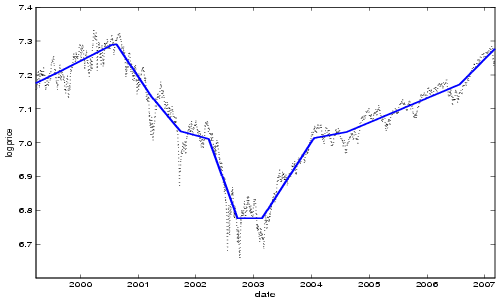

l1_tf: Software for l1 Trend Filtering
Version Beta (May 2008)
Kwangmoo Koh,
Seung-Jean Kim, and
Stephen Boyd
Purpose
l1_tf is an implementation of the interior-point method
for  trend filtering (also called trend estimation)
described in the paper
l1 Trend
Filtering.
l1_tf solves an optimization problem of the form
trend filtering (also called trend estimation)
described in the paper
l1 Trend
Filtering.
l1_tf solves an optimization problem of the form
 , and the problem data are
 and . Here,
is the second-order difference matrix
, and the problem data are
 and . Here,
is the second-order difference matrix
The figure below shows the l1 trend filtering result for (the log of) the S&P 500 index for the period March 25, 1999 to March 9, 2007, with .

Feedback
Please report any bugs to Kwangmoo Koh <deneb1@stanford.edu>, Seung-Jean Kim <sjkim@stanford.edu> or Stephen Boyd <boyd@stanford.edu>.
Download
l1_tf is distributed under the terms of the GNU General Public License 2.0.
l1_tf is implemented in both Matlab and C.
l1_tf Matlab package: gzipped tar file or directory
l1_tf C package: gzipped tar file or directory